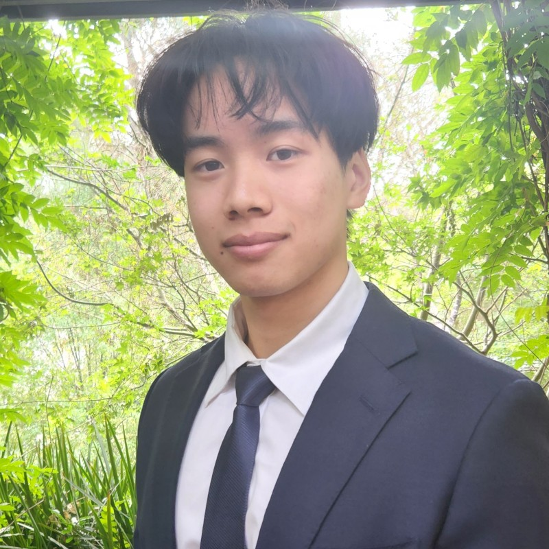

Krisna Bou
Bachelor of Engineering (Honours)
The University of Queensland


Bachelor of Engineering (Honours)
The University of Queensland
Final year Software Engineering student at the University of Queensland. I'm ambitious, optimistic, and constantly seeking opportunities to expand my skillset and gain industry experience. My studies have provided me with a solid foundation in technology, and I've developed a keen interest in Full Stack Development, UX/UI Design, Consulting, and DevOps.
Outside of my academic pursuits, I'm passionate about street dance and choreography, enjoy activities like running, swimming, and weightlifting, and make a conscious effort to maintain a healthy work-life balance.
Experienced with the project development process, Agile development, and dev-ops tools including Git
Implemented Google Apps Script and interfaced with a variety of APIs to automate a weekly survey conducted by the company for its Asia branches: Vietnam, Thailand, Singapore. Automated the processing of raw survey results, report generation, and redesigned display outlook
Researched and identified areas where the EAIT student experience needed improvement, with a focus on enhancing student belongingness. Actively participated in comprehensive research, analysis, and assessment of the student experiences within the faculty throughout their academic journey. Utilized various methods, including interviews, focus groups, and surveys, to gain valuable insights and shape strategies for a more inclusive and enriching educational environment.
Collaborated effectively within the working environment to assess tasks and determine optimal resource allocation for our store
Conducted weekly meetings for groups of new students, offering valuable tips and advice to assist in their transition to university life. Additionally, organized and facilitated campus events to support students in adapting to their on-campus studies and encouraged opportunities for meeting new people
Assisted in the general management of classes, activities, and events.
Assisted in designing events for the assiciations members
Selected by and received funding from the Department of Foreign Affairs and Trade to participate in the NCP Mobility program.
Awarded by FPT Education to selected students on exchange